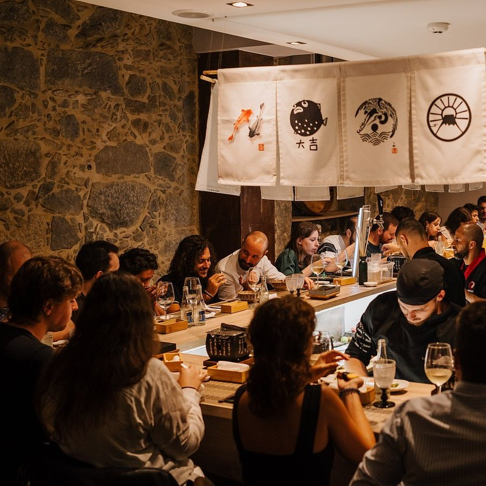
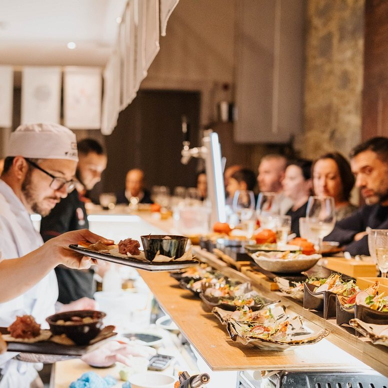
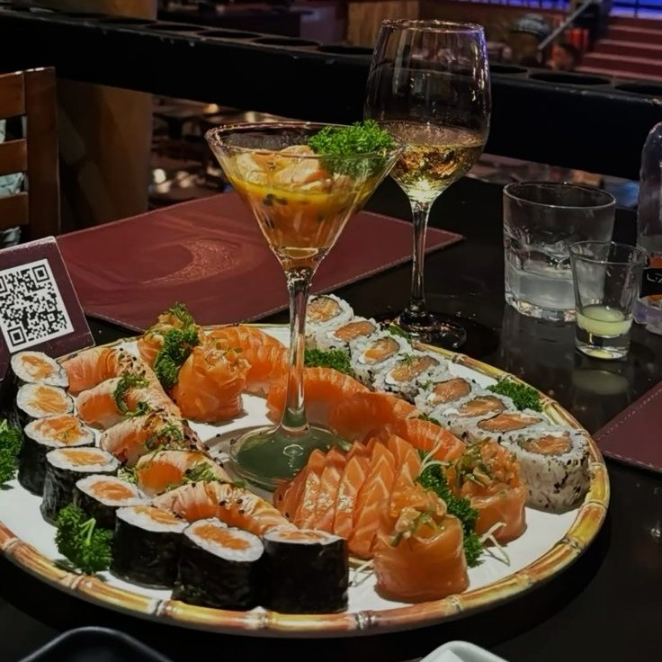

-

Omakase &
Openbar120€ por pessoa
(grupos maiores de 10 pessoas)Uma experiência gastronômica única, em que o chef prepara uma sequência de pratos especialmente escolhidos no momento, com os ingredientes mais frescos do dia. Cada etapa é uma expressão de criatividade, técnica e respeito à sazonalidade — um convite para confiar no chef e saborear o inesperado.
Uma seleção exclusiva de bebidas premium, criada para harmonizar com a delicadeza e a riqueza de sabores da culinária japonesa. Nosso open bar oferece uma experiência contínua e refinada, com coquetéis autorais, destilados de alta qualidade, vinhos selecionados e saquês especiais, servidos à vontade durante todo o evento. Mais do que um serviço, trata-se de um convite à celebração — um equilíbrio perfeito entre tradição e contemporaneidade, pensado para realçar cada momento à mesa.
-

Omakase
75€ por pessoa
(grupos maiores de 10 pessoas)Uma experiência gastronômica única, em que o chef prepara uma sequência de pratos especialmente escolhidos no momento, com os ingredientes mais frescos do dia. Cada etapa é uma expressão de criatividade, técnica e respeito à sazonalidade — um convite para confiar no chef e saborear o inesperado.
(Bebidas a parte).
-

Menu Degustação & Openbar
90€ por pessoa
(grupos maiores de 10 pessoas)Uma seleção refinada de sushis elaborados com os peixes mais frescos do dia. Cada peça é preparada na sequência ideal para destacar texturas, sabores e cortes, proporcionando uma jornada harmoniosa pela tradição japonesa. Uma experiência equilibrada entre técnica, frescor e arte.
Uma seleção exclusiva de bebidas premium, criada para harmonizar com a delicadeza e a riqueza de sabores da culinária japonesa. Nosso open bar oferece uma experiência contínua e refinada, com coquetéis autorais, destilados de alta qualidade, vinhos selecionados e saquês especiais, servidos à vontade durante todo o evento. Mais do que um serviço, trata-se de um convite à celebração — um equilíbrio perfeito entre tradição e contemporaneidade, pensado para realçar cada momento à mesa.